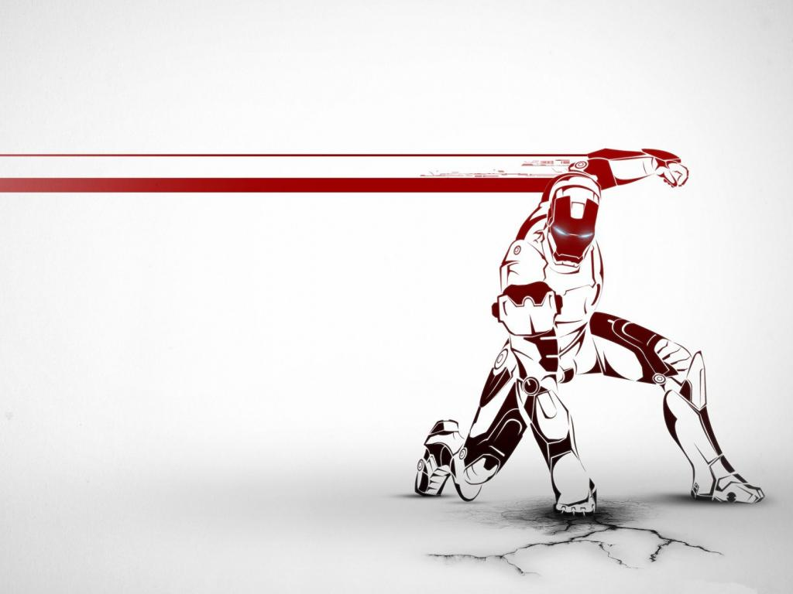

钢铁侠
托尼·斯塔克是一个拥有着亿万家产的实业家，从父亲那里接手了庞大的家业，托尼也从不避讳自己富家公子哥的高贵身份，
因为他知道这样有助于他在女人堆里无往不利。也许经营是托尼在继承了斯塔克这个姓氏时不得不承担的责任，可是他真正的兴趣却在发明创造上，
而且还是科学界公认的天才发明家。因为需要参加一个新式武器的调试大会，托尼离开了保护周密的美国，来到国外，却不幸被绑架……显然，
绑匪对托尼的家大业大并不感兴趣，他们绑架他只有一个目的，就是迫使他去制造一种破坏性极强的杀伤武器。聪明如托尼者怎肯乖乖就范？
他利用自己的智慧和有创造性的想象力，发明了一种高科技、类似于盔甲的外壳，帮助他从被囚禁的地方逃脱出来，还顺道揭露了一个将整个
世界都牵连在内的穷凶极恶的阴谋。都说当英雄容易上瘾，回到美国后的托尼改进了那套盔甲的强大功能，化身“钢铁侠”，以一个义务警察的
身份担起了保护这个世界的重责。